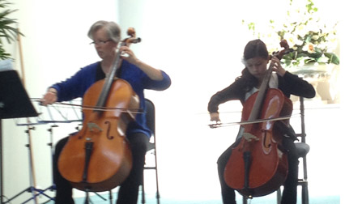
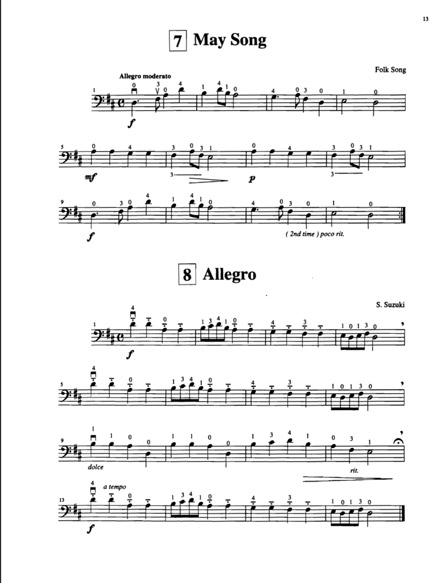
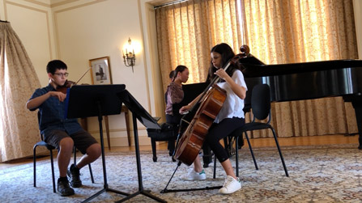
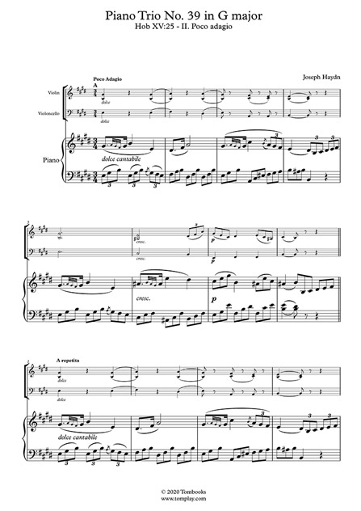
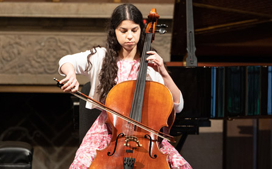
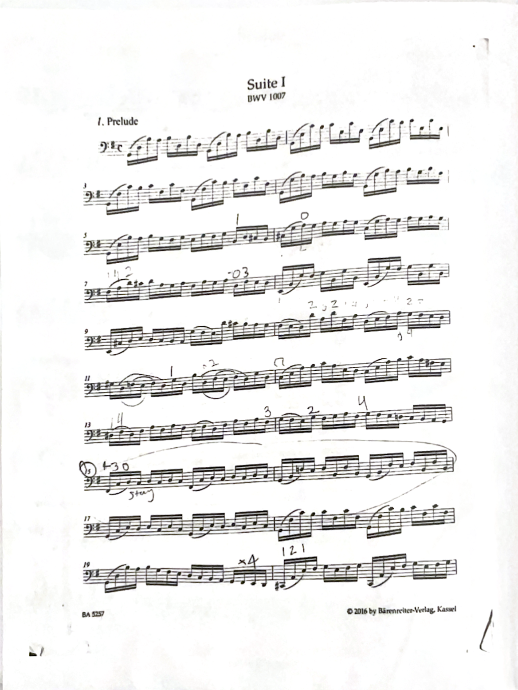

I performed "May Song" as my first cello performance in 2014. The piece is performed as a duet with two cellos, and I performed with my cello teacher, Jackie. I had started playing the cello in 2012 at school, and then started to take lessons with Jackie a few years later. She started me on Suzuki Book 1, which is where "May Song" was embeded. In the end of the recording, you may hear my brother talking to my mom. My whole family came to support me!


2014
This performance was in 2018, where I performed in the form of a masterclass at the MERIT program. This program was held at the Music Academy of the West, where music teachers from all around the world come and coach ensemble groups. I was so happy when I got in the program, and my coach Naomi from France taught me techniques I still use until this day. I performed with my two friends, Zephan and Grace. It was an intensive yet transformative experience I will never forget!


2018
This is my most recent solo performance from 2023. It was the end-of-year studio recital for my teacher Chenoa Orme-Stone's studio. I performed the famous Bach Suite 1, which is one of the most famous pieces performed on the cello. This performance was actually right after my City College graduation. I left my graudation early, changed in the bathroom, and then performed on stage! Then, I graduated from my cello studio. Bonus--I won best-dressed!


2023
This was one of my many Davis Symphony Orchestra performances at UC Davis. This specific performance featured opera singers from San Fransisco. I always love performing with guest stars, especially singers and dancers. Being part of the Davis Symphony Orchestra taught me so much and really pushed my boundaries. I performed so many pieces in such a short amount of time! I'm so glad I could be part of such a wonderful symphony.